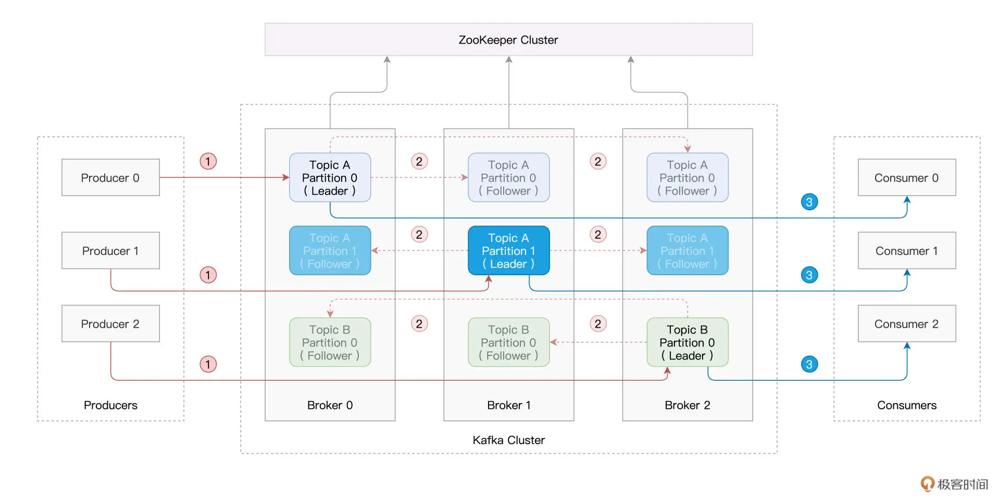

Spark + Kafka¶
Note
Structured Streaming 支持多种 Source，而在这些 Source 中，Kafka 的应用最为广泛。
Kafka 简介¶
在大数据的流计算生态中，Kafka 是应用最为广泛的消息中间件（Messaging Queue），消息中间件的核心功能有以下三点:
连接消息生产者和消费者
缓存生产者生产的消息
有能力让消费者以最低延迟访问到消息
消息中间件的存在，让生产者和消费者这两个系统之间，享有解耦、异步、削峰这三大收益。
Kafka 为无主架构，它依赖 ZooKeeper 来存储并维护全局元信息。所谓元信息，它指的是消息在 Kafka 集群中的分布与状态。
Kafka 集群中的每台 Server 被称为 Kafka Broker，Broker 的职责在于存储生产者生产的消息，并为消费者提供数据访问，Broker 与 Broker 之间相互独立。
在逻辑上，消息隶属于一个又一个的 Topic，也就是消息的话题。
为了提供数据访问的高可用，在生产者把消息写入主分区（Leader）之后，Kafka 会把消息同步到多个分区副本（Follower）。

消息的消费¶
本节的实例是资源利用率实时计算。
首先搜集集群中每台机器的资源（CPU、内存）利用率，并将其写入 Kafka.
然后我们用 Spark Structured Streaming 来消费 Kafka 数据流并将信息打印到 console.
最后对资源利用率数据做初步的分析与聚合，通过 Structured Streaming 将聚合结果写回到 Kafka.
我们主要关注后两步。
# 消息的消费
# option 指定 Kafka Broker 地址
# option 指定 Topic
dfCPU = (spark.readStream
.format("kafka")
.option("kafka.bootstrap.servers", "hostname1:9092,hostname2:9092,hostname3:9092")
.option("subscribe", "cpu-monitor")
.load())
# 将信息打印到 console
(dfCPU.writeStream
.outputMode("Complete")
.format("console")
.trigger(Trigger.ProcessingTime(10.seconds))
.start()
.awaitTermination())
再次写入 Kafka¶
# 聚合并把结果写回 Kafka
(dfCPU
.withColumn("key", F.col("key").cast(StringType()))
.withColumn("value", F.col("value").cast(FloatType()))
.groupBy("key")
.agg(avg("value").cast(StringType()).alias("value"))
.writeStream
.outputMode("Complete")
.format("kafka")
.option("kafka.bootstrap.servers", "localhost:9092")
.option("topic", "cpu-monitor-agg-result")
.option("checkpointLocation", "/tmp/checkpoint")
.trigger(Trigger.ProcessingTime(10.seconds))
.start()
.awaitTermination())
这里有两点需要特别注意：
读取与写入的 Topic 要分开，以免造成逻辑与数据上的混乱。
写回 Kafka 的数据，在 Schema 上必须用“key”和“value”这两个固定的字段。